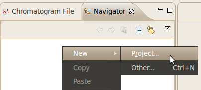
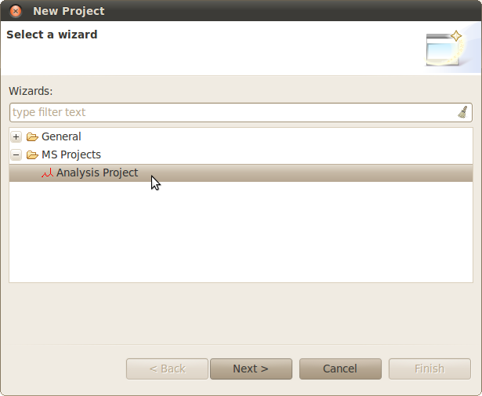
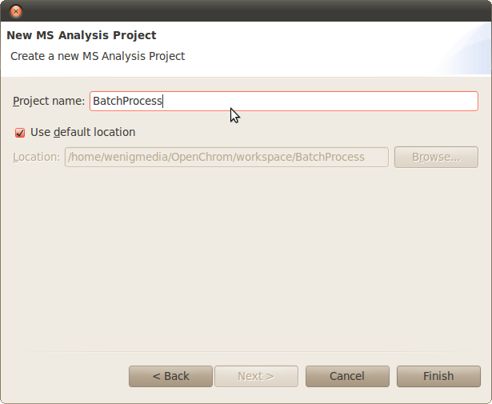
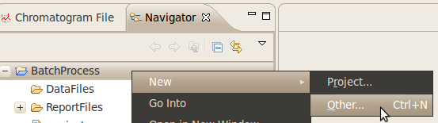
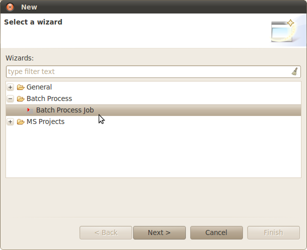
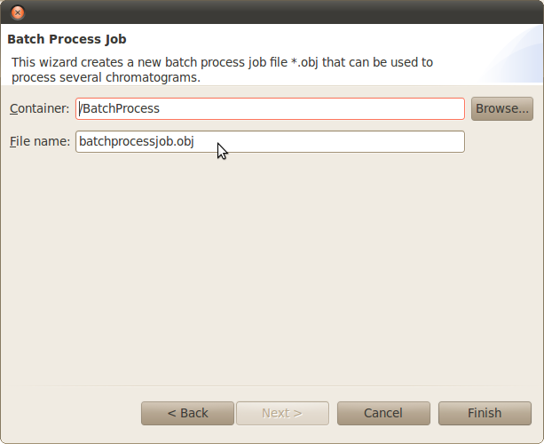
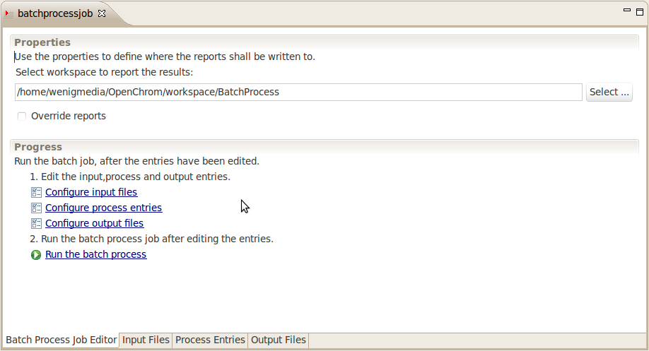

Batch Process
Use the batch process to edit and convert a set of chromatograms.
Create a new project:



Create a new batch process job:



Edit the batch process job:

Select the input files. All input files will be processed by the entries chosen in "Process Entries".
The input files will be processed by the sort order in "Process Entries".
All input files will be written to the selected output formats after processing.